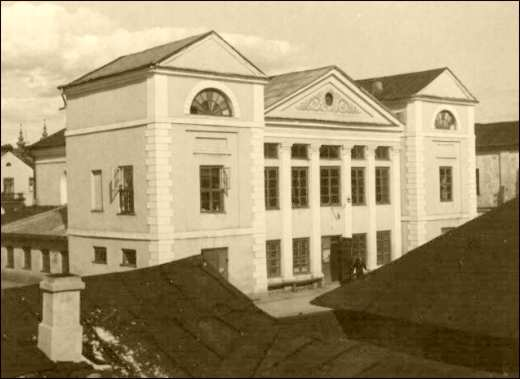

Pictures from our recent events and outreach
Gospodarka miast podlaskich charakteryzowała się od czasów pierwszego osadnictwa ludności żydowskiej dużym udziałem rolnictwa i hodowli. Żadne z bialskich miast po dziś dzień nie wyrosło na duży ośrodek gospodarczy, wyspecjalizowany w określonej produkcji lub handlu.
Pierwsze wzmianki historyczne potwierdzają, że Żydzi podlascy jak i większość Żydów zamieszkujących Koronę zajmowali się kupiectwem. Wraz ze wzrostem ludności żydowskiej na terytorium obecnego województwa bialskopodlaskiego, który przypada na XVI wiek pojawiają się takie nazwiska kupców żydowskich jak: Moszko Abramowicz, Cadek Jehudycz i Cechma Szachnowicz, utrzymujący kontakty handlowe z Brześciem Litewskim, Chełmem i Lublinem.[1]
Od połowy XVI wieku kupcy żydowscy z Tykocina i od połowy XVIII wieku kupcy żydowscy z Białegostoku wyspecjalizowali się w prowadzeniu handlu zagranicznego i wewnętrznego, dalekosiężnego i lokalnego. Oprócz handlu ludność żydowska Podlasia zajmowała się rzemiosłem, karczmarstwem, dzierżawami i operacjami kredytowo-
Innym aspektem charakterystycznym dla Podlasia dotyczącym zarobkowania ludności żydowskiej był ogromny odsetek Żydów zaangażowanych przy wyrobie i wyszynku napojów alkoholowych. Stanowiło to zgodnie z danymi opartymi na spisach ludności żydowskiej 55 % zatrudnienia ówczesnych Żydów. Liczba ta w porównaniu z drobną grupą rzemieślników wiejskich, i pojedynczych Żydów mieszkających na wsi, obejmowała przede wszystkim arendarzy karczem i browarów wraz z ich domownikami i żydowską czeladzią. Istniała też na Podlasiu rozwinięta już od XVI wieku sieć karczem miejskich, które później niemal w pełni dzierżawione były przez Żydów. Prawo do wyrobu, wyszynku i sprzedaży napojów alkoholowych zawarte zostało w przywileju Jana III dla łosickich Żydów z 1690 r. [4]
Rzut oka na strukturę zawodową Żydów mieszkających w Białej Podlaskiej potwierdza, że nie różniła się od innych tego typu miejscowości. Utrzymywali się oni jak już wspominałam szczególnie z handlu -
Spadek aktywności gospodarczej ludności żydowskiej należy tłumaczyć sytuacją społeczno-
W latach następnych wydano szereg zarządzeń, które krępowały działalność gospodarczą Żydów i ograniczały ich swobody osobiste. Zobowiązano komisje wojewódzkie m.in. do rygorystycznego stosowania zakazu kupowania nieruchomości przez Żydów, wprowadzono tzw. rewiry żydowskie w wielu miastach Królestwa Polskiego, nie wolno im było zamieszkać w trzymilowym pasie w pobliżu granicy austriackiej i pruskiej, wszelkie podania bogatszych żydowskich mieszkańców miast do władz o przyznanie praw obywatelskich załatwiane były odmownie.[7] Sytuacja taka trwała aż do lat sześćdziesiątych XIX wieku, kiedy to istotne zmiany w zakresie rozwoju przemysłu przyczyniły się do uruchomienia licznych zakładów przemysłowych, co w znacznym stopniu aktywizowało gospodarkę miast Królestwa Polskiego, w następstwie reformy uwłaszczeniowej istniejące manufaktury przekształcały się w fabryki. Ludność żydowska, która w każdym praktycznie mieście Królestwa stanowiła znaczną cześć społeczności, nie mogła pozostawać na uboczu toczących się zmian. Dlatego też z początkiem lat siedemdziesiątych XIX wieku Żydzi przyczynili się do rozwoju m.in. takich działów przemysłu jak: przemysł spożywczy, garbarstwo, produkcja mydła i świec oraz przemysł mineralny.[8]
Bezspornym jest fakt, że obecność ludności żydowskiej w poważnym stopniu wpłynęła na ożywienie i rozwój życia gospodarczego, rolniczego regionu bialskopodlaskiego a szczególnie handlu, rzemiosła, usług i drobnego przemysłu. Żydowscy kupcy i przedsiębiorcy z Białej Podlaskiej i Międzyrzeca Podlaskiego jak również żydowscy właściciele przetwórni rolno-
Aktywność bialskich Żydów w okresie dwudziestolecia międzywojennego znajdowała także ujście w działalności spółdzielczej. Ciekawym jest fakt, że nie było spółdzielni branżowych, natomiast funkcjonowały banki spółdzielcze takie jak Kupiecki, Ludowy i Udziałowy. Bank Spółdzielczy Udziałowy zarejestrowany został w bialskim sądzie w 1925 roku. W 1932 r. zrzeszał 150 członków, a prezesem jego był kupiec Finkielsztejn. Bank Udziałowy powstały w 1923 r. w Białej Podlaskiej liczył jedynie 34 osoby, ale za to miał filie w Kodniu, Terespolu i Łomazach. Długoletnim prezesem Banku był kupiec Beniamin Klinger. Bank Ludowy założony w 1926r. od początku lat trzydziestych miał najwięcej członków bo 220, to jednak nie wytrzymał najwidoczniej konkurencji z Kupieckim i Udziałowym i został w 1932 r. rozwiązany.[12]
Ważną rolę w życiu gospodarczym, religijnym, kulturalnym a także politycznym i administracyjnym odgrywała gmina żydowska a więc początkowo organizacja kahalna mająca szeroką autonomię religijną, społeczną, polityczną, kulturalną i gospodarczą a następnie organizacja tzw. dozorów bożniczych podległych Ministerstwu Wyznań Religijnych i Oświecenia Publicznego, którym już tylko przypadły w udziale funkcje ograniczające się do spraw religijno-

Synagoga żydowska, Biała Podlaska, Szkolny Dwór, ok. 1938 r.[15]
[2] A. Leszczyński, Z dziejów Żydów Podlasia…, op. cit., s. 7.
[4] Jakub Goldberg, Żyd i karczma miejska na Podlasiu w XVIII wieku, Studia Podlaskie, op. cit. s. 28-
[5] Stanisław Jadczak, Biała Podlaska, dzieje miasta i jego zabytki, Lublin 1993, s. 44.
[6] Bronisław Mikulec, Aktywność gospodarcza ludności żydowskiej Lublina w latach 1815-
[8] B. Mikulec, Udział Żydów w rozwoju przemysłu Lublina w latach 1864-
[10] Z. Zaporowski, Ludność żydowska w Białej Podlaskiej w latach 1918-
[11] J. Sroka, Ślad…, op. cit.
[12] Z. Zaporowski, Ludność żydowska…, op. cit. s.281-
[13] R. Kuwałek, Urzędowi rabini lubelskiego Okręgu Bożniczego…, op. cit., s. 28
[14] Z. Zaporowski, Ludność żydowska…, op. cit., s.272.
[15] Archiwum Regionalne Wojewódskiej Biblioteki Publicznej w Białej Podlaskiej.
Aktywność gospodarcza